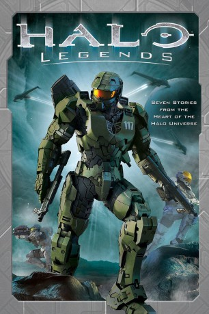

#2635 Halo Legends
 
 IMDB-Wertung: 6.7 / 10
IMDB-Wertung: 6.7 / 10  Metascore: 0
Metascore: 0 
Geschichten aus dem Halo-Universum: Im Schutz eines Meteor-Schauers springt ein Trupp von Orbital Drop Shock Troopers in eine Zone der Allianz, um einen Propheten zu töten. Der Gebieter Fal wird von den Propheten der Ketzerei beschuldigt. Ein Trupp von Spartanern erhält den Auftrag, ein Schlachtschiff der Allianz zu entern, um deren "Ladung" zu stehlen. An Bord der Forward Unto Dawn lässt Cortana ihr mittlerweile gewonnenes Wissen über die Forerunner und deren erste Auseinandersetzung mit der Flood Revue passieren.
Jahr: 2010
Dauer: 120 Minuten
FSK: 12
Land: USA Studio: Warner Home VideoTonspuren:
Untertitel:
Auflösung: SD (656x368) Größe: 700 MB
Genre: Action, Sci-Fi, Animation/Trick
Regisseur: Frank O'Connor, Shinji Aramaki, Hideki Futamura, Toshiyuki Kan'no, Tomoki Kyôda
Drehbuch: Joseph Staten, Frank O'Connor, Hiroshi Yamazaki, Eiji Umehara, Hiroyuki Kawasaki
Soundtrack: Eiko Konoo, Tetsuya Takahashi, Yasuharu Takanashi
Darsteller:
 Deke Anderson als 1337, segment Odd One Out
Deke Anderson als 1337, segment Odd One Out David Matranga als Sarge, segment Prototype / Joseph, segment Homecoming
David Matranga als Sarge, segment Prototype / Joseph, segment Homecoming Chris Ayres als Solider, segment Prototype
Chris Ayres als Solider, segment Prototype Emily Neves als Spartan, segment The Babysitter
Emily Neves als Spartan, segment The Babysitter Shelley Calene-Black als Cortana / Dr. Halsey, segments Origins The Package and Homecomming
Shelley Calene-Black als Cortana / Dr. Halsey, segments Origins The Package and Homecomming- Blake Shepard als O'Brien, segment The Babysitter
 John Gremillion als Fal, segment The Duel / Arthur, segment The Package
John Gremillion als Fal, segment The Duel / Arthur, segment The Package Andy McAvin als Boatman / Captain, segments The Duel / The Package
Andy McAvin als Boatman / Captain, segments The Duel / The Package- Chris Hutchison als ONI Commander, segment Prototype
 Greg Ayres als Kid A, segment Odd One Out
Greg Ayres als Kid A, segment Odd One Out Luci Christian als Female Soldier, segment Prototype / Kelly, segment The Package
Luci Christian als Female Soldier, segment Prototype / Kelly, segment The Package Brittney Karbowski als Sister, segment Odd One Out
Brittney Karbowski als Sister, segment Odd One Out Josh Grelle als Haka, segment The Duel
Josh Grelle als Haka, segment The Duel John Swasey als Captain, segment Odd One Out / Sergeant Hauser, segment Homecoming
John Swasey als Captain, segment Odd One Out / Sergeant Hauser, segment Homecoming Atsuko Tanaka als Dr. Halsey, segment The Package
Atsuko Tanaka als Dr. Halsey, segment The Package Chris Patton als Big Brother, segment Odd One Out
Chris Patton als Big Brother, segment Odd One Out- Akio Ôtsuka als ONI Commander, segment Prototype
 Keiji Fujiwara als Sarge, segment Prototype
Keiji Fujiwara als Sarge, segment Prototype Tomokazu Seki als Brother, segment Odd One Out
Tomokazu Seki als Brother, segment Odd One Out Kazuhiko Inoue als The Prophet, segment The Duel
Kazuhiko Inoue als The Prophet, segment The Duel David Wald als Master Chief, segments The Package and Odd One Out
David Wald als Master Chief, segments The Package and Odd One Out- Ai Maeda als Cortana, segment Odd One Out
- Mamiko Noto als Spartan, segment The Babysitter
 Houko Kuwashima als Daisy, segment Homecoming
Houko Kuwashima als Daisy, segment Homecoming- Hiroki Touchi als Fal, segment The Duel
- Andrew Love als Fred, segment The Package
- Josh Levi als Kid B, segment Odd One Out
 Kikuko Inoue als Han, segment The Duel
Kikuko Inoue als Han, segment The Duel Rob Mungle als Soldier, segment Prototype
Rob Mungle als Soldier, segment Prototype Leraldo Anzaldua als Soldier, segment Prototype / Ralph, segment Homecoming
Leraldo Anzaldua als Soldier, segment Prototype / Ralph, segment Homecoming- Justin Doran als Soldier, segment Prototype
- Masashi Ebara als Captain, segment The Package
- Melissa Davis als Han, segment The Duel
- Atsushi Abe als Joseph, segment Homecoming
- Satomi Sato als Grunts, segment The Duel
- Kenta Miyake als Sergeant Hauser, segment Homecoming
- Carli Mosier als Daisy, segment Homecoming / Girl, segment Odd One Out
- Yasunori Matsumoto als Captain, segment Odd One Out
 Susumu Chiba als Cortez, segment The Babysitter
Susumu Chiba als Cortez, segment The Babysitter- Yumi Tôma als Cortana, segment Origins
- Mika Doi als Mama, segment Odd One Out
- Takako Honda als Doctor Halsey, segment Homecoming
- Tomoko Kaneda als LAN, segment Odd One Out
- Jovan Jackson als Solomon, segment The Package
- Kalob Martinez als Cortez, segment The Babysitter
- Ryûzaburô Ôtomo als Haka, segment The Duel
- George Manley als Berger, segment The Babysitter
- Hajime Iijima als Dutch, segment The Babysitter
- Todd Postlethwaite als The Prophet, segment The Duel
- Joanne Bonasso als Mama, segment Odd One Out
Datei: X:\HD-Trick-Collections\Halo\Halo Legends (2010, FSK12, 656x368).avi seit 27.11.2015
Festplatte: Kinder-Filme+Trick
 Es gibt insgesamt 8 Filme in der Gruppe 'HD-Trick-Collections\Halo'
Es gibt insgesamt 8 Filme in der Gruppe 'HD-Trick-Collections\Halo'